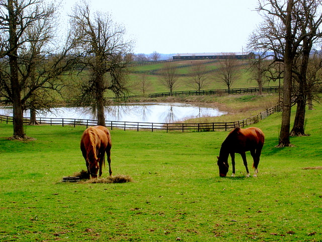

General Facts about Kentucky
The Commonwealth of Kentucky occupies an area of 40,409 square miles making it slightly larger than Iceland or somewhat smaller than Guatemala. Compared with other US states, Kentucky would fit into Texas almost seven times but is nearly five times the size of New Jersey. The state has a population of 4.46 million people. The capital is Frankfort and the largest city is Louisville. Kentucky's major rivers are the Cumberland River, the Kentucky River, the Licking River, and the Green River. Kentucky's highest point, the Black Mountain, offers a rare view of the Appalachian coalfields with no visible mountaintop removal mining.
The state is home to the Kentucky Derby, a horse race, which is usually held on the first Saturday in May. Thoroughbred horses and beef cattle are Kentucky's most important livestock products. The Mammoth Cave National Park preserves a part of the Green River valley and hilly country of south-central Kentucky and Mammoth Cave, the longest known cave system in the world. The state has six regions: Jackson purchase, Western Coal Fields, Pennyroyal, Bluegrass, Knobs, and Eastern Coal Fields.
